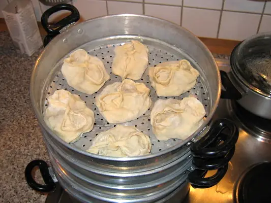

Фото: ru:User:Sover.spb, Copyrighted free use

Манты с бараниной
Большие пельмени с рубленой бараниной и луком, приготовленные на пару
120 мин6 порц.651 ккал на порциюБ 29 · Ж 30 · У 67Среднеазиатская кухня
Продукты на 6 порц.
- Мука пшеничная3 стак.
- Вода270 мл
- Яйцо куриное1 шт
- Соль3 ч. л.
- Баранина700 г
- Лук репчатый5 шт
- Сливочное масло50 г
- Зира1 ч. л.
- Перец чёрный молотый1 ч. л.
- Тыква по желаниюпо вкусу
- Растительное масло1 ст. л.
- Сметана 20% по желаниюпо вкусу
Как готовить
- Замесите из муки, 220 мл воды, яйца и 1 ч. л. соли крутое гладкое тесто, 10 минут. Накройте и оставьте на 30 минут.
- Баранину нарежьте ножом мелким кубиком 5 мм, лук тоже мелко порубите. По желанию добавьте тыкву кубиками.
- Смешайте мясо с луком, зирой, перцем, солью, 50 мл холодной воды и мелко порезанным холодным маслом.
- Раскатайте тесто в тонкий пласт 1-2 мм и нарежьте квадратами 10×10 см.
- Положите на квадрат столовую ложку с горкой начинки, соедините противоположные углы над начинкой, затем защипните края и соедините соседние уголки.
- Смажьте ярусы мантоварки маслом, разложите манты на расстоянии друг от друга.
- Поставьте над кипящей водой, накройте и готовьте на пару 40-45 минут. Подавайте со сметаной или растопленным маслом.
Совет. Мясо рубите ножом, а не крутите в мясорубке: так сок остаётся внутри. Вместо курдючного жира в начинку кладут сливочное масло. Сырые манты можно заморозить и готовить без разморозки, добавив 10 минут.